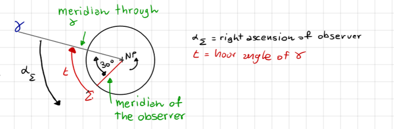
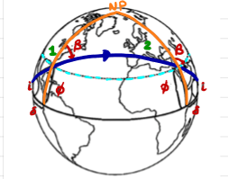
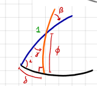
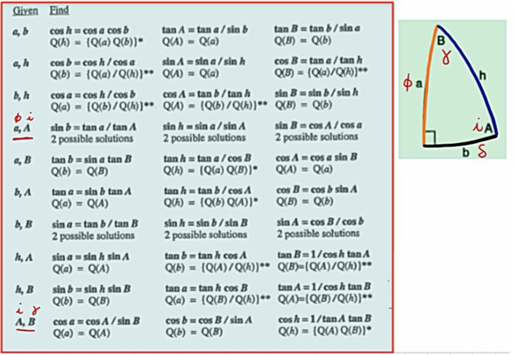
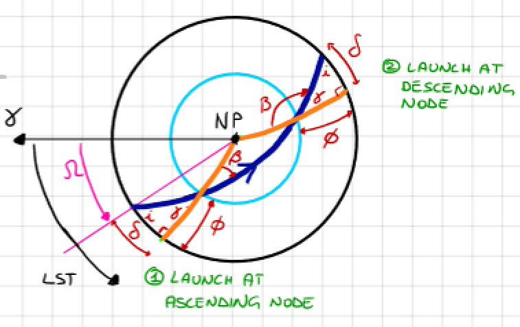
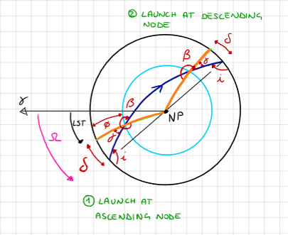
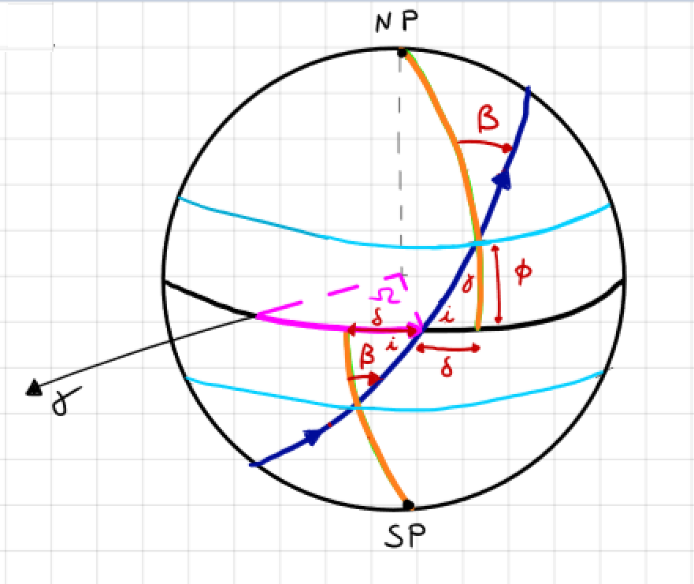
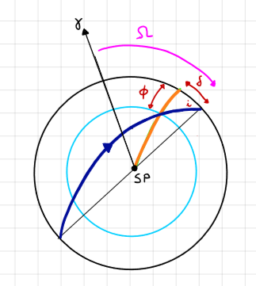

Time, Calendars and Launch Windows#
Prepared by: Hardit Saini, Emmanuel Airiofolo, Ilanthiraiyan Sivagnanamoorthy and Angadh Nanjangud
In this lecture we cover the following topics:
Sidereal Time#
Local apparent sidereal time (Abbreviated LAST or LST): time measure based on the hour angle of \(\gamma\).
Sidereal day: the interval between two successive returns of \(\gamma\) to the same local meridian.

LAST coincides with the right ascension of the observer \(\alpha_\Sigma\), hence;
Note: The sidereal time is measured with respect to a fixed direction, thus it is more useful for computing the time passage of spacecraft, whose orbits are defined with respect to the same fixed direction.
Solar Day vs Sidereal Day#

Sidereal Day \(T_\gamma = \frac{2 \pi}{\omega_e}\), with \(\omega_e\) the angular velocity of the Earth.
Solar Day \(T_{\circledcirc} = \frac{2 \pi + \theta}{\omega_e}\)
Note:
Hence, \(T_{\circledcirc} > T_\gamma\).
\(\theta\) is the angle swept by the Earth in one solar day, thus \(\theta = \frac{2 \pi}{Y}\) with \(Y\) the number of solar days in a year (\(Y = 365.256\) days).
Hence:
There are \(Y + 1\) sidereal days in 1 year.
\(T_{\circledcirc}\) = 24 hr \(\implies T_\gamma\) = 23 hr, 56 min, 4 sec.
Calendars#
Tropical year:#
Interval between two successive passages of the Sun to \(\delta\).
or:
Sidereal year:#
Interval between two successive passages of the Sun to a reference star.
Note: Due to the precession of the equinoxes, the tropical year is shorter than the sidereal year; \(\gamma\) moves clockwise.
Julian Calendar (46 BC)#
12 months, regular year of 365 days, with a leap day added in February every 4 years.
It was estimated that a tropical year consisted of 365.25 solar days. To avoid a drift between the Julian calendar and the tropical year, 1 day was added every 4 years.
Gregorian Calendar (1582 AD)#
12 months, regular year of 365 days, with a leap day added to February every 4 years except for secular years (e.g., 1700). The leap day is added to secular years that are multiples of 400 (e.g., 2000).
It was estimated that a tropical year consisted of 365.2425 days, thus the Julian year accumulates a 3-day difference every 4 centuries with respect to equinox time.
PROBLEM: Gregorian date yyyy/mm/dd hh:mm:ss is not practical for computations!
Julian Day#
Progressive number of days since noon, 1 January 4713 BC. For example:
To work with smaller numbers, Modified Julian date is used:
Launch Windows#
The launch window is the time when the launch site on the surface of the Earth passes through the orbital plane.
Determination of launch time (sidereal time) and launch direction.

The launch site must pass through the orbit, thus three conditions:
No launch window: \( \phi > i \quad \text{or} \quad \phi > 180^\circ - i \quad \text{(retrograde)} \)
One launch window: \( \phi = i \quad \text{or} \quad \phi = 180^\circ - i \quad \text{(retrograde)} \)
Two launch windows: \( \phi < i \quad \text{or} \quad \phi < 180^\circ - i \quad \text{(retrograde)} \)

\( \text{NOTE: when } \phi = i, \text{ LAUNCH DUE EAST, we fully exploit the velocity of the launch site!} \)
Given Data:
\(i\) is the orbit inclination.
\(\phi\) is the launch site latitude.
To be computed:
\(\delta\) is the window location angle.
\(\alpha\) is the direction auxiliary angle.
\(\beta\) is the launch azimuth: the angle from the north to the launch direction, positive clockwise.
\(\text{NOTE: launch sites have constraints on launch azimuth}\).
Right Spherical Triangle Formulae#

Launch Window: Prograde Orbit (i < \(90^\circ\)) and Northern Hemisphere#

① Ascending Node:
② Descending Node:
Note from (222):
A closer look at \(\boxed{\phi \leq i} \) suggests:
a. The latitude of launch site must be less than orbit inclination for a direct launch.
b. Equatorial orbit only from equatorial launch sites.
c. When \( \phi = i \), launch due East: optimal condition!
Launch Window: Retrograde Orbit \(( i \geq 90^\circ )\) and Northern Hemisphere#

① Ascending Node:
② Descending Node:
Launch Window: From Southern Hemisphere#

The launch azimuth is the same as the northern hemisphere.
\(\text{LST}_{\text{launch}}\) is different.
Example: Ascending Node:
